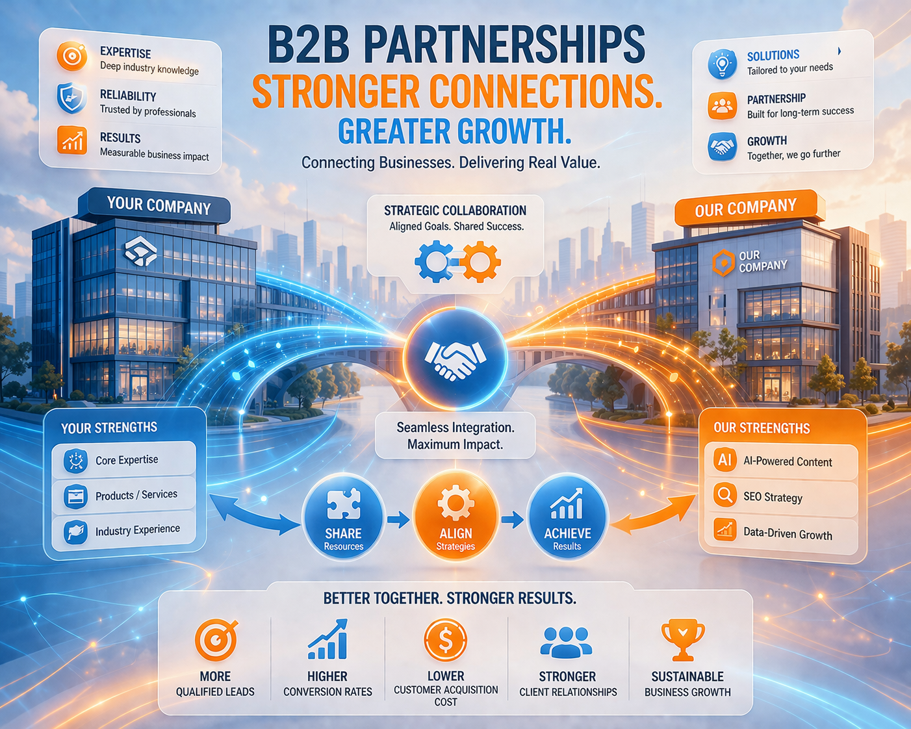
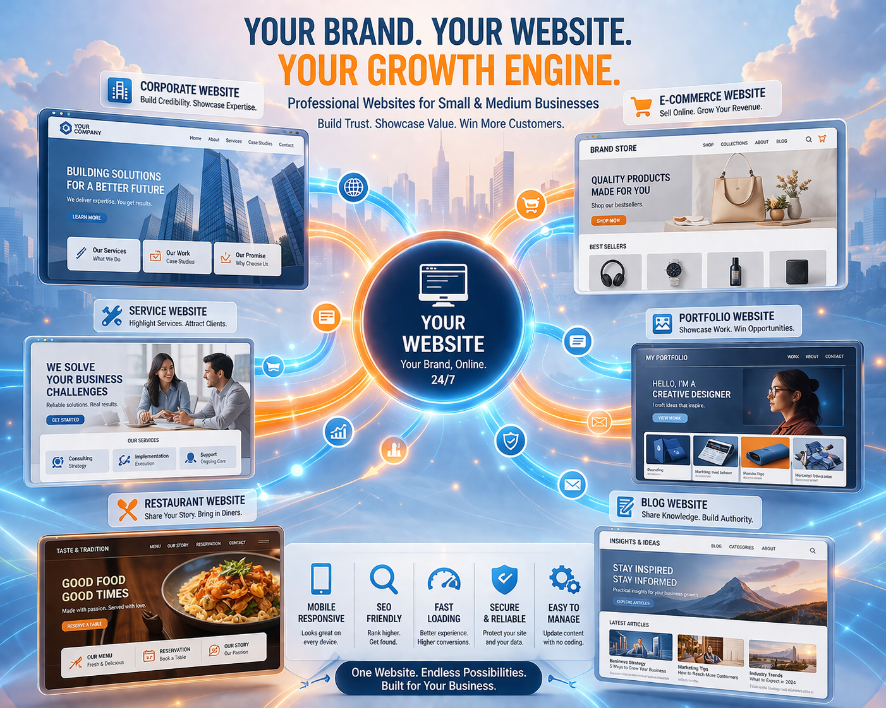
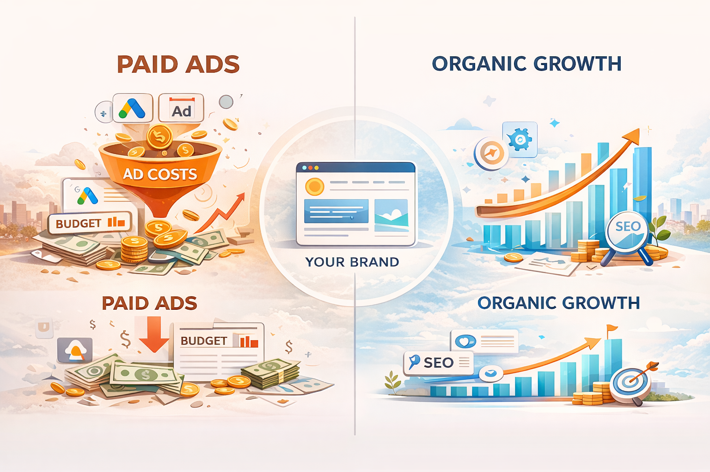

01
B2B 服務型企業
適用於顧問公司、系統整合商、技術服務與專業服務產業， 透過內容建立信任感，讓潛在客戶在搜尋解決方案時先找到你。
- 建立專業文章，提升品牌信任感
- 針對客戶問題建立搜尋入口
- 讓網站持續帶來詢問與商機

不同產業與內容型態，都可以透過 AI SEO 系統建立穩定的流量來源， 讓網站從展示頁逐步轉化為持續帶來訪客、詢問與潛在客戶的成長引擎。
只要你的網站需要被搜尋、需要內容入口、需要穩定獲客， 就很可能適合透過 AI SEO 建立可持續運作的內容與流量系統。
適用於顧問公司、系統整合商、技術服務與專業服務產業， 透過內容建立信任感，讓潛在客戶在搜尋解決方案時先找到你。

很多企業網站只有幾頁內容，缺乏更新與流量入口。 AI SEO 系統可以協助建立持續產文與流量累積機制， 讓官網不再只是名片頁。

把專業知識、教學內容與服務經驗轉化為可被搜尋的文章， 讓內容不只存在於課程或社群中，而是成為長期曝光與獲客資產。
如果你的流量幾乎來自廣告， AI SEO 系統可以幫助你逐步建立長期自然流量來源， 讓內容成為網站自己的成長資產。

Aplus 的重點不只是產出文章， 而是把內容策略、搜尋流量與網站轉換整合成一套能持續運作的成長方式。
不是隨機發文，而是根據搜尋需求與網站目標建立內容架構。
用 AI 提升產出效率，減少人力負擔，讓更新變得更可持續。
每篇文章都可能成為未來的搜尋入口，逐步累積網站自然流量。
不再停留在少量頁面，而是開始建立可被搜尋的內容入口。
讓更多潛在客戶透過搜尋接觸你的品牌、服務與專業內容。
不只是展示品牌，而是逐步承接流量、詢問與商機。